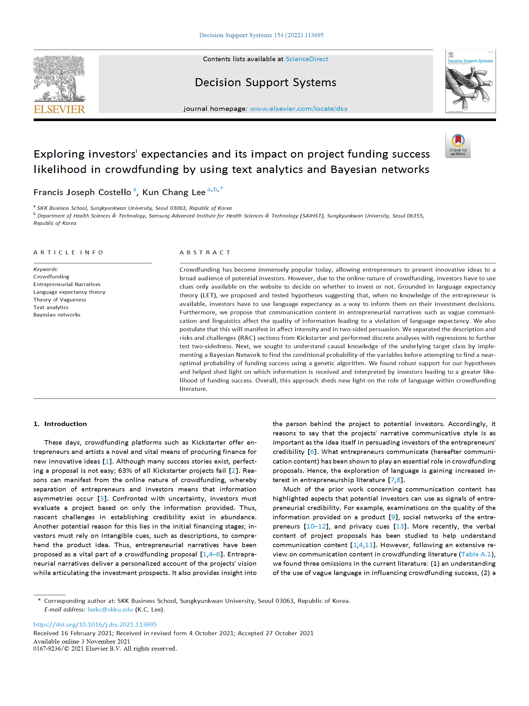

<!DOCTYPE html>
<html lang="en">
<head>
    <meta charset="UTF-8">
    <meta name="viewport" content="width=device-width, initial-scale=1.0">
    <title>Publications - Francis Joseph Costello</title>
    <link rel="stylesheet" href="style.css">
    <style>
        /* Flexbox layout to align image and text */
        .publication {
            display: flex;
            flex-direction: column;
            align-items: center;
            margin-bottom: 40px;
            padding: 20px;
            border: 2px solid #ccc;
            border-radius: 10px;
            position: relative;
        }

        .publication img {
            width: 100%;
            max-width: 300px;
            margin-bottom: 20px;
        }

        .publication-text {
            width: 100%;
        }

        /* Line separators between sections */
        .publication-separator {
            border-bottom: 3px solid black;
            margin: 40px 0;
        }

        /* Ensure padding at the bottom of the last publication */
        .publication:last-child {
            padding-bottom: 40px;
        }

        /* Add space for the link at the bottom */
        .publication a {
            display: inline-block;
            margin-top: 20px;
            font-size: 16px;
            color: blue;
        }

        /* Responsive adjustments */
        @media screen and (min-width: 768px) {
            .publication {
                flex-direction: row;
                align-items: flex-start;
            }

            .publication img {
                width: 300px;
                margin-right: 20px;
                margin-bottom: 0;
            }

            .publication-text {
                flex-grow: 1;
            }
        }

        /* Additional responsive adjustments for smaller screens */
        @media screen and (max-width: 480px) {
            .publication {
                padding: 15px;
            }

            .publication h2 {
                font-size: 1.2em;
            }

            .publication p {
                font-size: 0.9em;
            }
        }
    </style>
</head>
<body>
    <header>
        <div class="logo">Francis J. Costello</div>
        <nav>
            <a href="1.index.html">Home</a>
            <a href="2.research.html">Research</a>
            <a href="3.publications.html">Publications</a>
            <a href="4.blog.html">Blog</a>
            <a href="5.cv.html">CV</a>
            <a href="6.useful_links.html">Useful Links</a>
            <a href="7.contact.html">Contact</a>
        </nav>
    </header>

    <main>
        <div class="content">
            <h1>Publications</h1>

            <!-- High-Level Summary -->
            <section class="summary">
                <p>
                    Below are my three most recent publications that explores entrepreneurial IS, the efficiency of the controls processes in IT service firms and gamified IS in omnichannel services.
                    For more, visit my full Google Scholar profile
                    <a href="https://scholar.google.co.kr/citations?user=ymsFtrIAAAAJ&hl=en" target="_blank">here</a>.
                </p>
            </section>

            <!-- Publication 1 -->
            <section class="publication">
                
                <div class="publication-text">
                    <h2>Exploring Investors' Expectancies and Its Impact on Project Funding Success Likelihood in Crowdfunding by Using Text Analytics and Bayesian Networks</h2>
                    <p><strong>Journal:</strong> Decision Support Systems (2022)</p>
                    <p><strong>Authors:</strong> Francis Joseph Costello, Kun Chang Lee</p>
                    <p><strong>Abstract:</strong> Crowdfunding has become immensely popular today, allowing entrepreneurs to present innovative ideas to a broad audience of potential investors. However, due to the online nature of crowdfunding, investors have to use clues only available on the website to decide whether to invest or not. Grounded in language expectancy theory (LET), we proposed and tested hypotheses suggesting that, when no knowledge of the entrepreneur is available, investors have to use language expectancy as a way to inform their investment decisions. Furthermore, we propose that communication content in entrepreneurial narratives, such as vague communication and linguistics, affects the quality of information, leading to a violation of language expectancy. We also postulate that this will manifest in affect intensity and in two-sided persuasion. We separated the description and risks and challenges (R&C) sections from Kickstarter and performed discrete analyses with regressions to further test two-sidedness. Next, we sought to understand causal knowledge of the underlying target class by implementing a Bayesian Network to find the conditional probability of the variables before attempting to find a near-optimal probability of funding success using a genetic algorithm. We found robust support for our hypotheses and helped shed light on which information is received and interpreted by investors, leading to a greater likelihood of funding success. Overall, this approach sheds new light on the role of language within crowdfunding literature.</p>
                    <p><strong>Keywords:</strong> Crowdfunding, Text Analytics, Language Expectancy Theory, Bayesian Networks</p>
                    <a href="https://doi.org/10.1016/j.dss.2021.113695" target="_blank">Read the full paper</a>
                </div>
            </section>

            <div class="publication-separator"></div>

            <!-- Publication 2 -->
            <section class="publication">
                
                <div class="publication-text">
                    <h2>Hierarchical Balanced Scorecard-Based Organizational Goals and the Efficiency of Controls Processes</h2>
                    <p><strong>Journal:</strong> Journal of Business Research (2021)</p>
                    <p><strong>Authors:</strong> Sangjae Lee, Francis Joseph Costello, Kun Chang Lee</p>
                    <p><strong>Abstract:</strong> Our paper suggests the maximized extent of hierarchically interrelated balanced scorecard-based organizational goals (e.g., financial, customer, internal business, learning, and growth) by weighting the current status of controls processes. The efficiency of the controls processes was analyzed given the extent of maximized organizational goals to show the adjustment of controls that can proceed given the maximized extent of governance objectives. This paper uses the survey data collected from two IT service companies based in China (n = 96) and Korea (n = 191). Using a genetic algorithm, we found the optimized extent of the hierarchically interrelated organizational goals accomplished from the controls processes’ weighted current status. The efficiency of the current status for the controls processes was evaluated using data envelopment analysis to produce IT and en￾terprise goals and governance objectives. Based on the maximized extent of the goals provided from the current status of the controls, the significantly different average efficiencies are suggested among the five classes of the controls processes. The slack analysis of controls shows the specific controls processes and the extent of controls to be reduced. This provided an indication of the direction of controls design that adjusts the level of each controls processes that can accomplish the same extent of organizational goals. The recommendation of controls design based on each control’s efficiency is lacking, especially considering the organizational hierarchy of the balanced scorecard based organizational goals, including their relations with controls processes. This study in￾tends to fill this void by suggesting and comparing the controls efficiency for five classes of controls processes and balanced scorecard-based organizational goals for junior and senior employees. Based on COBIT 5′s goals cascade, this research provides a useable tool that can implement an effective and efficient IS security design.</p>
                    <p><strong>Keywords:</strong> Controls Processes, Balanced Scorecard, Efficiency, Organizational Goals, Genetic Algorithm</p>
                    <a href="https://doi.org/10.1016/j.jbusres.2021.04.038" target="_blank">Read the full paper</a>
                </div>
            </section>

            <div class="publication-separator"></div>

            <!-- Publication 3 -->
            <section class="publication">
                
                <div class="publication-text">
                    <h2>The Unobserved Heterogeneous Influence of Gamification and Novelty-Seeking Traits on Consumers' Repurchase Intention in the Omnichannel Retailing</h2>
                    <p><strong>Journal:</strong> Frontiers in Psychology (2020)</p>
                    <p><strong>Authors:</strong> Cheong Kim, Francis Joseph Costello, Kun Chang Lee</p>
                    <p><strong>Abstract:</strong> As information technology continues to provide a platform for any business willing to engage in diverse channels, it has ushered in a continuous evolution of ways to attract and maintain a given customer base. One of the latest trends seen in the retailing industry is the implementation of an omnichannel business strategy. As a result, the number of businesses now implementing such a strategy has led to a lack of differentiation amongst competitors. Therefore, it is no surprise that omnichannel retailers have had to rethink and acquire a new competitive advantage through the exploration of new and innovative strategic activities. Prior work on services has shown gamification to be a successful strategy in enhancing customer loyalty, promoting positive word-of-mouth, and enhancing greater engagement with the offered service. Also, offering hedonic values (one of gamification’s main premises) has been an effective strategy for engaging customers as well as promoting repeat purchase intentions. Despite this, the potential effects of gamification within an omnichannel setting is not yet explored, and thus the rationale of this study. In exploring this gap, we employed means-end chain theory as a basis in which to discover the potential of gamification. Additionally, as gamification is a novel method in omnichannel research, this paper strived to explore the moderating effect of the novelty-seeking traits and unobserved heterogeneous behaviors of consumers. This research was based on 440 valid questionnaires in a survey dataset from Amazon M-Turk. The results provided strong evidence of the underlying proposition within the research models. Specifically, this study showed that gamification could be a potential unique feature used for engaging consumers onto one’s platform, especially consumers with a novelty-seeking trait. We did, however, find that this finding does not apply to the case for all consumers. Therefore, the implication of this research suggests to practitioners that its implementation should be approached through an opt-in rather than a compulsory option.</p>
                    <p><strong>Keywords:</strong> Gamification, Novelty-Seeking, Omnichannel, Repurchase Intention, Hedonic Value</p>
                    <a href="https://doi.org/10.3389/fpsyg.2020.01664" target="_blank">Read the full paper</a>
                </div>
            </section>

            <div class="publication-separator"></div>

        </div>
    </main>

    <footer>
        <p>&copy; 2024 Francis Joseph Costello. All rights reserved.</p>
    </footer>
</body>
</html>
